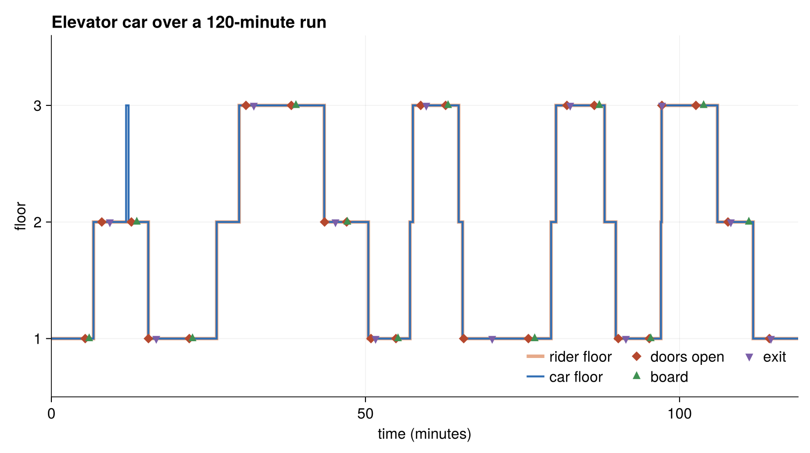
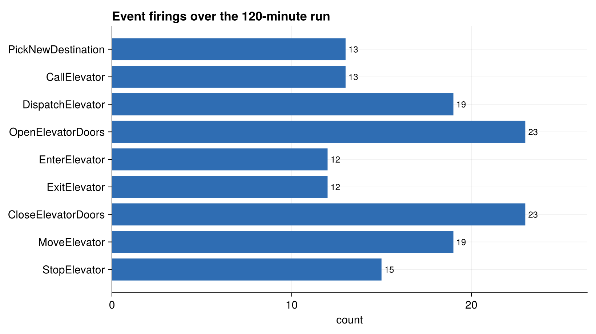

Running the Elevator
This page shows how to build and run the elevator simulation, how to turn on invariant checking, and where the model is tested.
The entry point
The hand-written model exposes run_elevator, which wires up a small scenario — one person, one elevator, three floors, run for 120 simulated minutes — and returns the final simulation time:
function run_elevator(; policy=ChronoSim.NoPolicy())
person_cnt, elevator_cnt, floor_cnt = 1, 1, 3
minutes = 120.0
physical = ElevatorSystem(person_cnt, elevator_cnt, floor_cnt)
included_transitions = [
PickNewDestination, CallElevator, OpenElevatorDoors, EnterElevator,
ExitElevator, CloseElevatorDoors, MoveElevator, StopElevator,
DispatchElevator,
]
trajectory = TrajectorySave()
sim = SimulationFSM(
physical, included_transitions;
sampler=NextReactionMethod(), key_type=ClockKey,
rng=Xoshiro(93472934), observer=trajectory, policy=policy)
stop_condition = (physical, step_idx, event, when) -> when > minutes
ChronoSim.run(sim, init_physical, stop_condition)
return sim.when
endThe shape here is the same one every model in this repository follows:
- Build the observed physical state.
- List the event types the simulation may fire (
included_transitions). - Construct a
SimulationFSMwith a sampler, a random seed, and — optionally — an observer and a policy. - Define a
stop_condition, which sees each event before it fires so a time boundary is exact. - Call
ChronoSim.run(sim, initializer, stop_condition).
The initializer runs at time zero and must write the state that events depend on, because those first writes are what propose the first candidate events. For the elevator it randomizes each person's starting floor:
function init_physical(physical, when, rng)
for who in eachindex(physical.person)
floor = rand(rng, 1:physical.floor_cnt)
physical.person[who] = Person(floor, floor, 0, false)
end
endTo run it from the package:
using ChronoSimExamples.ElevatorExample
ElevatorExample.run_elevator()Watching the trajectory
The observer argument is a callable the framework invokes after every firing. The model's TrajectorySave observer records each fired event's clock key and time, and (in this model) prints the building state so you can watch cars and people move:
struct TrajectorySave
trajectory::Vector{TrajectoryEntry}
end
# called as observer(physical, when, event, changed_places) after each firingAn observer is the intended way to pull data out of a run — nothing else needs to know the event types. Capturing the car's floor, its door state, and the rider's position at every firing yields the trajectory of a single 120-minute run:

The step line is the single car's floor; diamonds mark door openings, triangles mark the rider boarding and exiting. The rider's floor (orange) tracks the car while riding and rests on a floor while idle.Counting each firing by its event type over the same run shows how the work is distributed: doors open and close most often, movement and dispatch next, and the rider's own decisions least.

Event firings tallied byclock_key(event)[1] across the 120-minute run.Turning on invariant checking
The policy keyword is where ChronoSim's checking machinery plugs in. Passing CheckInvariants(ElevatorExample) verifies every @invariant in the module after each fired event and stops with a named violation if one fails:
using ChronoSimExamples.ElevatorExample
using ChronoSim: CheckInvariants
ElevatorExample.run_elevator(policy=CheckInvariants(ElevatorExample))Invariant checking is off by default (the default policy=ChronoSim.NoPolicy()), because it costs time on every step; you turn it on while developing or debugging.
The smoke test
The dedicated test, test/test_elevator.jl, is a single end-to-end smoke test. It runs the whole 120-minute simulation with invariant checking on and asserts that the run advanced:
@testset "Elevator smoke" begin
using ChronoSimExamples.ElevatorExample
using ChronoSim: CheckInvariants
with_logger(ConsoleLogger(stderr, Logging.Debug)) do
run_duration = ElevatorExample.run_elevator(policy=CheckInvariants(ElevatorExample))
@assert run_duration > 9.9
end
endThat short test carries real weight: with the CheckInvariants policy, a run that completes has also verified all eight safety invariants after every one of its events. If any elevator action ever produced an illegal state — a passenger both on a floor and in a car, a call with no one waiting — the run would stop and name the invariant and the guilty address.
The elevator is exercised much more thoroughly outside this file. The derived twin is compared against the hand-written model in test/test_differential.jl and test/test_overapprox.jl, model-checked through Quint in test/test_quint.jl, and used as the main fixture for ChronoSim's debugging tools in test/test_whyverbs.jl. That last set is rich enough to deserve its own page: see Debugging with the Elevator.